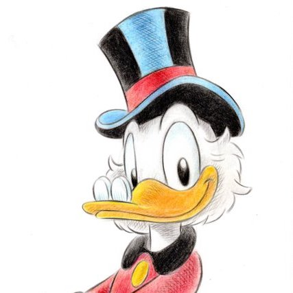
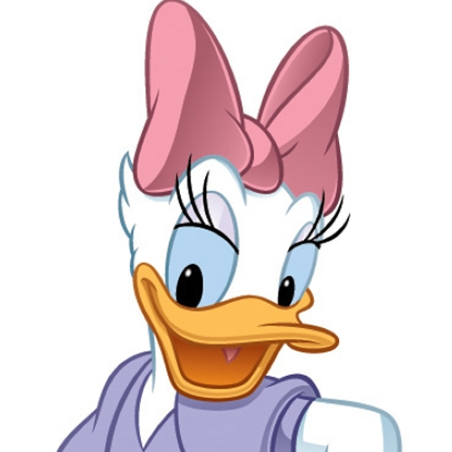

Vilka är vi?
Kaffeknattarna startades av Joakim von Anka efter att hans brorsöner blivit beroende av Prime energi-dryck. Han insåg snabbt att han inte skulle kunna stoppa knattarnas nyfunna kärlek för koffein så han bestämde sig för att om någon skulle kapitalisera på hans brorsöners beroende så var det han. Idag är samtliga knattar certifierade baristor och dricker minst 8 koppar per dag.
VD
Joakim von Anka
+46 (0) 70 111 11 11
joakim@jva.com
HR
Kajsa Anka
+46 (0) 70 222 22 22
kajsa@jva.com